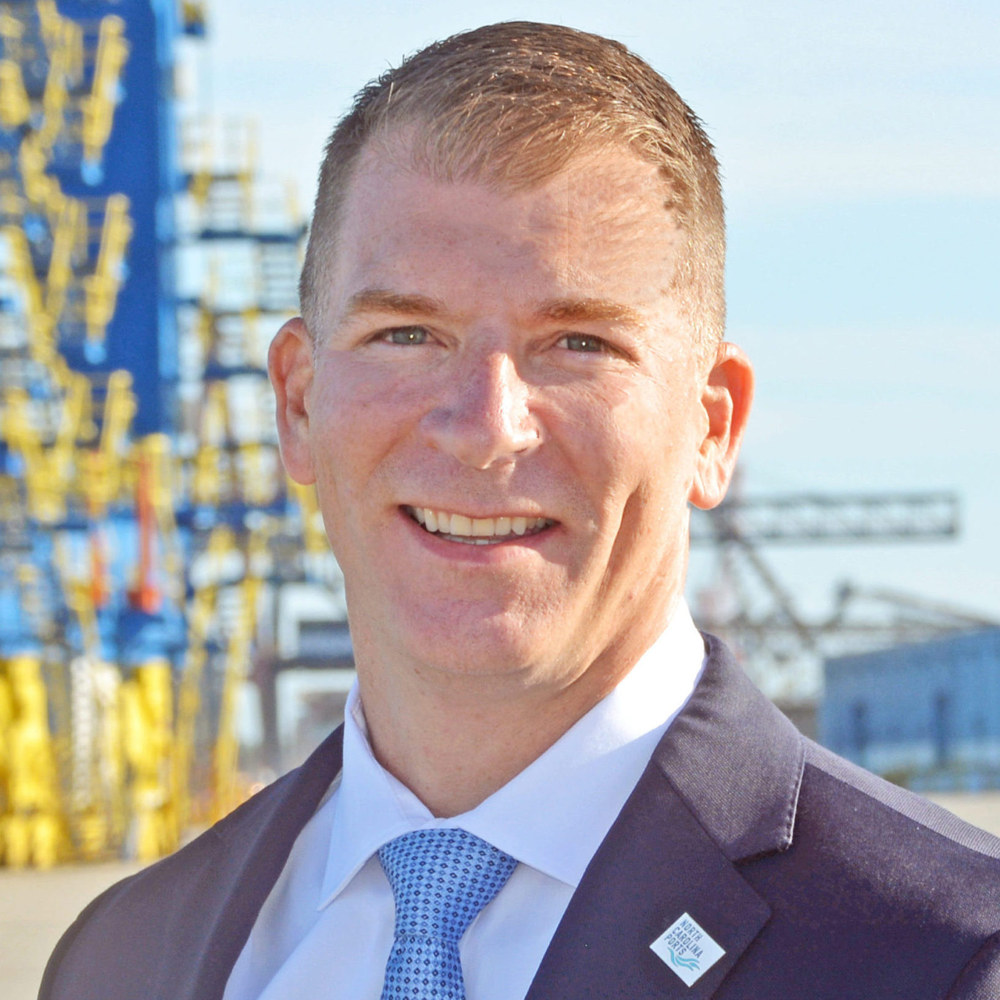
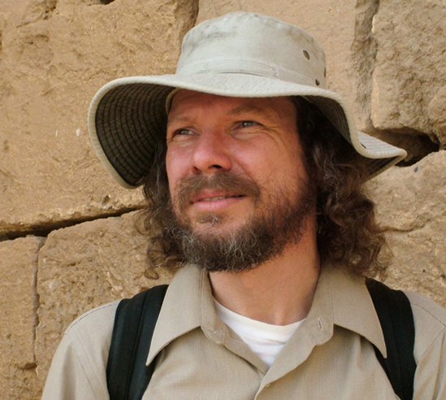
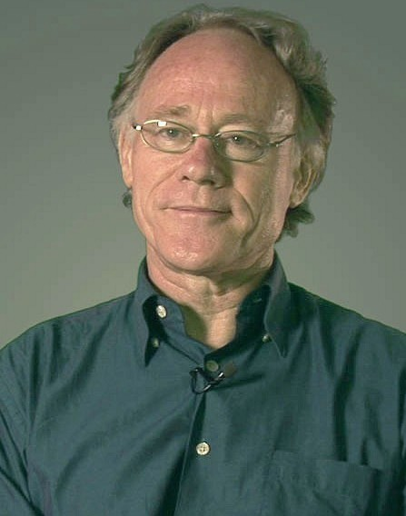
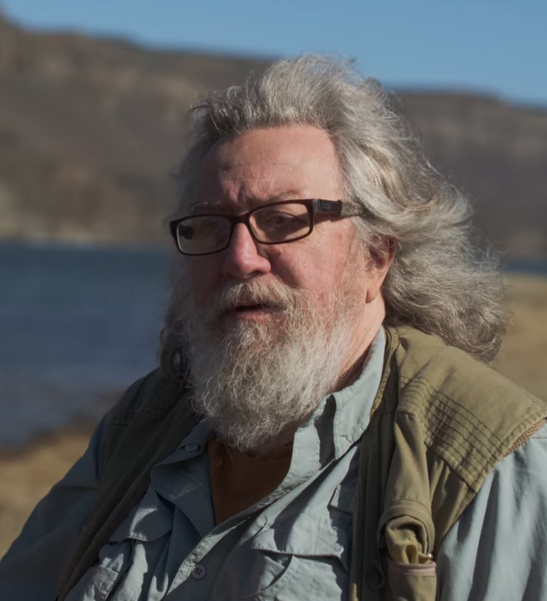
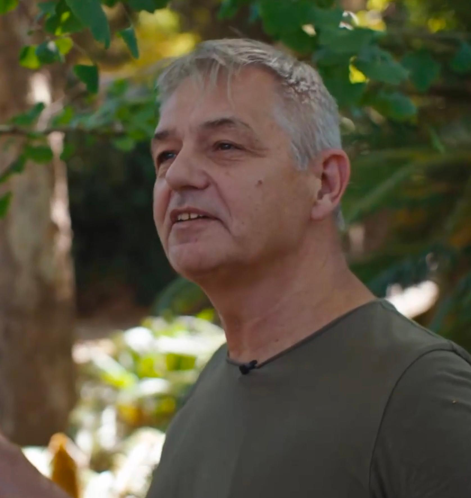

Modern/Alternative Catastrophists Pt. 2
Article researched and written by the author of this website, Tyler V. (BraveCat)
Posted Apr. 1st, 2026
Overarching Insight
The final part of these articles contains the most modern theories and developments regarding events that shapes Earth's history. This period of research focuses on deep geology, cosmic and solar forcing, and cyclical geomagnetic events. This includes Graham Hancock's Younger Dryas Impact Hypothesis, Randall Carlson's geologic findings, and the work from Ben Davidson and Roger Cunningham. Where mainstream fails to push the goal posts of science, independent researchers tow the line to analyze data in the hopes of solving the most important questions.
Figures From 1900's to Current
Paul LaViolette (1947–)

Role: American physicist and systems theorist; independent researcher; author of Earth Under Fire (1997), Genesis of the Cosmos (1995), and other works. Holds a PhD in systems science from Portland State University.
LaViolette's central contribution to catastrophism is the galactic superwave hypothesis, one of the most scientifically detailed proposals in the alternative catastrophism space.
Core Theory — Galactic Superwaves
The galactic center (the supermassive black hole at the center of the Milky Way, ~26,000 light-years away) periodically undergoes explosive outbursts. Not unlike a quasar or Seyfert galaxy nucleus in miniature. These outbursts launch a pulse of cosmic rays (primarily high-energy particles) traveling outward through the galaxy at near the speed of light. LaViolette calls this pulse a "superwave." As the superwave propagates, it sweeps up interstellar dust and creates a zone of enhanced cosmic ray density preceded by a surge of gamma and X-ray radiation.
Galactic Superwave Effects
Intense cosmic ray bombardment of Earth, causing increased ionization, chemical changes in the atmosphere, enhanced lightning, and potentially mutagenic effects.
Disruption of the Sun: enhanced cosmic ray flux could trigger solar flares and coronal mass ejections far more intense than anything in modern experience.
Cometary bombardment: Cosmic ray pressure could dislodge Oort Cloud comets, sending them into the inner solar system.
Climate effects: Enhanced cosmic ray flux increases cloud nucleation (similar to Svensmark's hypothesis), affecting global temperature; combined with solar effects and dust loading, this could trigger ice ages or sudden warming.
Periodicity
LaViolette estimates superwaves reach Earth roughly every 10,000–26,000 years, with some events being more powerful than others. He links major superwave events to:
The onset of the last Ice Age (~100,000 years ago)
The Younger Dryas event (~12,900 years ago)
Various other climate events in the ice core and sediment record.
Ice Core Evidence
LaViolette's most compelling empirical claim involves ice cores from Greenland and Antarctica. He identifies thin layers of elevated beryllium-10 (Be-10) in ice cores corresponding to his proposed superwave events. Be-10 is produced by cosmic ray bombardment of the atmosphere and is deposited in ice. Spikes in Be-10 indicate periods of enhanced cosmic ray flux. He maps these Be-10 spikes to the dates of proposed superwaves and argues the correlation is significant.
Mythological Evidence
Like Velikovsky and Clube, LaViolette uses ancient mythology as evidence. He argues that the Starburst galaxy icon found in ancient Mesopotamian art represents the galactic center during a superwave event. Zodiacal mythology encodes astronomical knowledge about galactic cycles, transmitted by an ancient technologically sophisticated civilization. The Egyptian Sphinx and astronomical alignments of ancient monuments encode knowledge of the 25,920-year precession cycle, which LaViolette links to superwave periodicity.
Catastrophist Relevance
LaViolette is significant because he proposes a galactic-scale mechanism for periodic catastrophism — extending the causal chain from Earth's surface, through the solar system, to the galaxy itself. His work connects astrophysics, climate science, geology, and mythology in a comprehensive framework. While mainstream science has not accepted his specific hypothesis, his emphasis on galactic cosmic ray flux as a potential climate driver has partial support from several other independent works, giving his ideas a legitimate scientific thread even amid the more speculative elements.
Doug Vogt (1947–2023)

Role: Role: American independent researcher; founder of the Diehold Foundation; author of the Reality of the Dynamics of the Universe series of books; producer of numerous YouTube lectures on his "Nova" hypothesis.
Core Theory — Solar Micronova and Pole Reversal
Vogt developed what he called the "Clock Cycle of the Universe", a theory centering on the idea that the Sun undergoes a periodic micronova event (a brief but intense burst of solar energy) that triggers magnetic pole reversals and global catastrophes on Earth. The mechanism involves similar cycles of ~12,000 years discussed by numerous catastrophists. He argues the Sun accumulates magnetic and thermal energy over a regular cycle of approximately 12,068 years (Vogt's specific figure, derived from his analysis of Hebrew texts, geological cycles, and geomagnetic data). At the end of each cycle, the Sun briefly flares or "novas", not a full stellar nova (which would destroy the solar system) but an intense pulse of electromagnetic energy, plasma, and possibly a brief but intense increase in solar output, or micronova.
This solar pulse accounts for several events recorded in geological data and scripture with a focus on geomagnetism. It triggers a rapid magnetic pole reversal on Earth (occurring in hours to years rather than the thousands of years mainstream geophysics proposes). It generates crustal displacement or rapid movement of the magnetic poles relative to the geographic poles, causing catastrophic floods, earthquakes, and atmospheric disruption. The geological clock is reset, erasing most if not all evidence of previous civilizations.
Hebrew Texts As The Primary Evidence Source
Vogt placed unusual emphasis on the Hebrew alphabet as an encoded information system. He argued that the letters of the Hebrew alphabet encode information about the universe's structure, the Sun's behavior, and the timing of catastrophic cycles. Vogt claimed that ancient scribes deliberately encoded this knowledge in the letter forms themself.
Geomagnetic Evidence
Vogt cited several legitimate geomagnetic phenomena:
Geomagnetic excursions: episodes where the Earth's magnetic field dramatically weakens and the poles wander significantly, without full reversal. These are documented in the paleomagnetic record and include events like the Laschamp Excursion (~41,000 years ago) and the Gothenburg Excursion (~13,500 years ago) — dates that Vogt argued corresponded to his solar cycle timing.
The current weakening of the geomagnetic field: The Earth's magnetic field has been measurably weakening for about 160 years (since systematic measurements began in the 1840s). This is real and documented — the field has weakened approximately 10% since 1840 with exponential accelerations happening since 2000. Vogt interpreted this as evidence of an approaching magnetic event.
The South Atlantic Anomaly: A region where Earth's magnetic field is unusually weak, centered off the coast of Brazil. This anomaly has been growing, and Vogt cited it as evidence of impending polar instability.
Catastrophist Relevance
Vogt represents the self-taught autodidact tradition in catastrophism in deep interpretation across multiple fields, making ambitious synthetic claims, but lacking the methodological rigor to distinguish genuine signal from noise. His work is most significant as a precursor to Ben Davidson's more polished presentation of similar ideas, and as an example of how genuine geomagnetic phenomena (field weakening, excursions) can be woven into catastrophist narratives that go well beyond what traditional data supports.
Robert Schoch (1950–)

Role: American geologist and geophysicist; associate professor at Boston University's College of General Studies; author of Voices of the Rocks (1999), Pyramid Quest (2005), Forgotten Civilization (2012), and other works.
Schoch occupies a unique position: he is a credentialed geologist who has produced genuinely controversial but field-evidence-based arguments for ancient catastrophism, particularly regarding solar plasma events.
Core Contribution 1 — The Sphinx Water Erosion Controversy
In the early 1990s, Schoch (working with alternative Egyptologist John Anthony West) conducted geological fieldwork at the Great Sphinx of Giza and proposed that the weathering patterns on the Sphinx enclosure walls were caused by water erosion from prolonged rainfall rather than wind erosion (the conventional explanation).
The Argument
The Sphinx's body and the walls of the Sphinx enclosure show deep, undulating vertical weathering channels that Schoch argued are characteristic of water erosion from rain, not wind erosion (which produces more horizontal, scalloped patterns)
For such extensive rainfall erosion to occur, the region must have been subjected to heavy rainfall for an extended period.
The last time the Nile region experienced such heavy rainfall (based on paleoclimatic evidence) was during the African Humid Period (the "Green Sahara"), which ended approximately ~5,000–8,000 years ago, and possibly much earlier wet periods going back to 10,000–12,000 years ago or earlier.
Implication: If the weathering predates the end of the heavy rainfall period, the Sphinx could be much older than the conventional date of ~2,500 BCE (the reign of Pharaoh Khafre). Schoch has suggested the Sphinx core body may date to 10,000–7,000 BCE or earlier.
Mainstream Response
Egyptologist Mark Lehner and geologist James Harrell contested Schoch's interpretation, arguing that:
The weathering could be explained by salt weathering (salt crystals from dew and capillary rise breaking down the limestone) rather than rainfall.
The subsurface geology of the Sphinx enclosure does not show the deeper weathering profiles expected if rainfall erosion had occurred over thousands of years.
'There is no archaeological evidence of a civilization sophisticated enough to carve the Sphinx in 10,000 BCE.' There are hundreds of examples around the world where this argument is made despite megalithic structures being recorded from the same age or earlier.
The debate remains unresolved, though Schoch's geological arguments have been defended by other geologists. Many archeological digs get delayed or the funding cut despite overwhelming support for excavations to continue.
Core Contribution 2 — Solar Plasma Events and Ancient Catastrophe
In his later work, particularly Forgotten Civilization (2012), Schoch developed a theory that a major solar outburst (a coronal mass ejection or solar flare of extraordinary magnitude) occurred at the end of the last ice age (~9,700 BCE by his dating) and caused several disruptions.
Plasma bombardment of Earth's surface, causing fires, chemical burns to exposed organisms, and direct thermal damage.
Electromagnetic disruption — destroying any electronic civilization that existed (and explaining why no high-tech artifacts survive).
Atmospheric ionization — affecting climate and triggering further catastrophic processes.
Triggering volcanic and tectonic activity — the electromagnetic pulse destabilizing Earth's crust.
Evidence Cited
Göbekli Tepe: The extraordinary megalithic complex in southeastern Turkey (~11,600 years old, the oldest known monumental structure), was deliberately buried ~10,000 years ago. Schoch argues this deliberate burial was a preservation act in anticipation of, or response to, catastrophic solar events.
Plasma discharge features in ancient art: Working with Anthony Peratt (a Los Alamos plasma physicist), Schoch examined petroglyphs from around the world that Peratt argued represent plasma configurations (specifically, the "plasma column" or "squatter man" figure that appears when intense plasma impinges on a magnetic field). Peratt claimed these petroglyphs were eyewitness accounts of plasma phenomena in the ancient sky during a solar outburst.
Core samples from Antarctica and elsewhere: Schoch cites evidence in ice cores of a major event at the end of the Pleistocene, including elevated sulfates and other markers consistent with either volcanic or extraterrestrial events.
Rongorongo writing from Easter Island: Schoch has argued that this undeciphered script may contain records of ancient catastrophic events.
Assessment
The Sphinx water erosion argument is the most scientifically defensible aspect of Schoch's work, and the geological debate is genuine. Several credentialed geologists have agreed that the weathering pattern is consistent with rainfall or even potentially a larger flooding event. The implication (that the Sphinx is much older) is more contentious.
The solar plasma theory is speculative but still highly researched. While major coronal mass ejections are real phenomena (the Carrington Event of 1859 is the largest in modern records), there is no direct evidence for an event of the magnitude Schoch proposes at 9,700 BCE. Ice cores and sedimentary records do not show the catastrophic markers that would be expected from such an event on the scale he describes.
The Peratt plasma petroglyphs connection has been criticized by both archaeologists (who note alternative interpretations of the imagery) and plasma physicists (who dispute that the specific configurations Peratt identified require a major plasma event visible from Earth).
Catastrophist Relevance
Schoch is significant because he represents credentialed mainstream science being deployed in support of genuinely alternative catastrophist conclusions. His geological work involving field mapping, petrographic analysis, sedimentological interpretation uses standard scientific methods. The controversy his Sphinx work has generated has been one of the most productive debates in alternative archaeology, forcing both sides to engage carefully with geological evidence. His solar plasma hypothesis, while speculative, has helped direct attention toward the solar activity record as a potential driver of ancient catastrophes. A theme that connects directly to Davidson and others.
Graham Hancock (1950–)

Role: British journalist and author; former East Africa correspondent for The Economist; author of Fingerprints of the Gods (1995), Magicians of the Gods (2015), America Before (2019), and numerous other works. Host of the Netflix series Ancient Apocalypse (2022).
Hancock is the most publicly prominent and influential figure in modern alternative catastrophism. His books have sold millions of copies worldwide and his ideas have profoundly shaped popular understanding (and misunderstanding) of prehistoric catastrophes.
Core Theory — Lost Civilization Destroyed by Younger Dryas Impact
Hancock developed one central theory over the span of three decades and multiple books. This theory involved the possibility of an ancient and advanced civilization that was taken out by the Younger Dryas impact hypothesis.
A sophisticated pre-Ice Age civilization existed, achieving levels of astronomical, architectural, and navigational knowledge far beyond what conventional archaeology attributes to peoples of the Paleolithic/early Neolithic period. This civilization was catastrophically destroyed by the impact events associated with the Younger Dryas (~12,800 years ago), leaving only fragmentary survivors who transmitted knowledge to successor cultures (the Egyptians, Mesopotamians, Maya, etc.) thus explaining the mysterious sophistication of ancient cultures' astronomical and architectural achievements.
The survivors of this lost civilization sailed to various locations around the world, teaching local peoples advanced knowledge and appearing as culture heroes in mythology. The "wisdom bringers" found in virtually all ancient traditions. Geological and archaeological evidence for this catastrophe includes: the Younger Dryas Boundary impact layer, anomalous ancient structures, underwater archaeological sites, ancient maps, and the convergence of flood myths globally.
Key Themes and Evidence
Younger Dryas Impact Hypothesis
Hancock has been a major public advocate for the Younger Dryas Impact Hypothesis (YDIH) which is the peer-reviewed scientific hypothesis (developed by Allen West, James Kennett, Richard Firestone, and others, published in PNAS 2007) that a cometary or asteroid bombardment impacted approximately 12,800 years ago. This triggered the Younger Dryas climate cooling event, contributing to the extinction of North American megafauna (mammoths, mastodons, horses, camels, giant ground sloths, etc). It caused catastrophic fires and ecological disruption across the Northern Hemisphere, the evidence for which included:
A thin Younger Dryas Boundary (YDB) layer found at numerous sites containing elevated concentrations of: platinum, iridium, nanodiamond, micro spherules, cosmic spherules, and melt glass.
Osmium isotope anomalies consistent with extraterrestrial origin.
Charcoal layers indicating continent-scale fires. The Carolina Bays holding millions of oval-shaped depressions in the southeastern United States, possibly formed by secondary ejecta from a major impact.
Göbekli Tepe
Hancock has written extensively about Göbekli Tepe as evidence for his lost civilization hypothesis. Its extraordinary age (~11,600 years) places it at the immediate post-Younger Dryas period, exactly when survivors of a pre-catastrophe civilization might have begun rebuilding. Its sophisticated astronomical alignments (particularly to the Pleiades and to the star Deneb around 10,000 BCE) suggest advanced astronomical knowledge. Its deliberate burial ~10,000 years ago remains unexplained by conventional archaeology.
Ancient Astronomical Alignments
Hancock argues that ancient structures worldwide (Giza pyramids, Angkor Wat, Stonehenge, Nabta Playa, etc.) encode astronomical knowledge using the 26,920-year precession cycle, suggesting notable findings. A shared source of astronomical knowledge predating all known civilizations. Deliberate encoding of information about the timing of cosmic cycles, possibly as warnings about future catastrophes.
Underwater Archaeology
Hancock has investigated submerged archaeological sites that were above sea level during the last glacial maximum (when sea levels were ~120 meters lower):
Yonaguni Monument (Japan) — a series of massive stone formations underwater off Yonaguni Island, which Hancock argues is an artificial structure.
Gulf of Khambhat/Cambay (India) — sonar anomalies suggesting submerged structures, associated with radio-carbon dates of ~9,500 years.
Various Bahamian features — including the Bimini Road, a natural limestone formation that Hancock and others have argued may be artificial.
Scientific Assessment
The Younger Dryas Impact Hypothesis itself remains scientifically contested but legitimate. A 2018 paper in Journal of Geology found platinum anomalies at the Younger Dryas boundary at 23 sites across three continents, one of the strongest pieces of evidence to date. A 2023 comprehensive review published in Scientific Reports provided additional multi-site evidence. However, numerous counter-papers have challenged the interpretation of YDB materials, and no single impact structure of the right age has been found. Though proponents argue a comet or ice sheet impact might not leave a conventional crater.
The "lost civilization" claim has not been accepted by mainstream archaeology. They claim that there is no direct archaeological evidence (artifacts, settlements, written records) of an advanced pre-Younger Dryas civilization. At the same time, massive fundings for excavations to continue at these same ancient sites have ceased or been sabotaged, making it impossible to know definitively. Mainstream argues that the astronomical sophistication Hancock attributes to ancient cultures is largely within the capabilities of prehistoric peoples tracking agricultural seasons and navigational stars. It does not require prior civilization. However the sophistication of large, complex megalithic structures perfectly aligned to cardinal directions and stars continue the debates.
Mainstream argues that the proposed cultural transmission mechanism (survivors sailing globally) is not supported by genetic or material culture evidence. This can be explained by synchronous disaster events that happened even since the Younger Dryas, causing potentially smaller resets in history. Hancock's Netflix series Ancient Apocalypse prompted a formal complaint from the Society for American Archaeology, arguing it was "harmful" to public understanding by characterizing mainstream archaeologists as suppressing evidence, an accusation Hancock did not shy from making. People such as Jimmy Corsetti have since argues otherwise that mainstream archeologists and government entities do in fact suppress knowledge and excavation efforts, as seen in actions made by the World Economic Forum (WEF) halting or delaying various dig sites around the world.
Catastrophist Relevance
Hancock's significance is primarily cultural and communicative rather than scientific. He has brought the Younger Dryas impact hypothesis to a global audience of millions, generated enormous public interest in prehistoric catastrophes, and stimulated genuine archaeological and geological research into topics that might otherwise have remained obscure. His synthesis of geology, astronomy, mythology, and archaeology, however contested, represents the most comprehensive popular presentation of the modern alternative catastrophism framework. The Netflix controversy is itself revealing: the strength of the reaction from mainstream archaeology suggests Hancock's ideas are perceived as genuinely threatening to established narratives, which is usually a sign that the needle is moving.
Randall Carlson (1951–)

Role: American geologist, architectural scholar, and researcher; founder of GeoCosmic Rex and the Randall Carlson Podcast; long-time collaborator with Graham Hancock; architect by training with extensive self-directed geological fieldwork.
Core Contributions
1. Missoula Floods and Younger Dryas Catastrophism
Carlson has done the most detailed popular-level reconstruction of the Missoula Floods (see Bretz, above) and their implications for understanding Younger Dryas catastrophism. He has personally fieldworked much of the Channeled Scablands and surrounding regions, producing detailed photographic and video documentation of flood features. He argues that the Missoula Floods were far more catastrophic than even Bretz's original estimates. The scale of some features (particularly the giant current ripples and enormous erratic boulders) implies water volumes and velocities even greater than standard reconstructions suggest. He connects the Missoula Floods directly to the Younger Dryas Impact Hypothesis, arguing that impact events could have triggered the rapid drainage of multiple ice-dammed lakes simultaneously, producing a global pattern of catastrophic flooding.
2. Cosmic Impact Cycles and Sacred Geometry
Carlson's most distinctive contribution is his attempt to link several different geological and ancient factors into astronomical cycles.
Geological evidence for recurring catastrophic cycles (ice ages, floods, impacts).
Ancient architectural knowledge (particularly sacred geometry, as expressed in Gothic cathedrals, Egyptian temples, and other ancient structures).
Astronomical cycles (particularly the 25,920-year precession of the equinoxes).
He argues that ancient builders encoded astronomical and catastrophic cycle information into sacred architecture, using specific mathematical ratios derived from the geometry of Earth's precession. Thus preserving the knowledge that catastrophic events recur on identifiable cycles so that future civilizations could prepare.
3. Ice Core and Paleoclimate Data
Carlson has developed considerable expertise in interpreting ice core records (particularly the GISP2 and VOSTOK cores) and using them for multiple purposes. Most notably to document the rapidity and magnitude of climate shifts at the Younger Dryas boundary. Additionally to identify potential impact-related chemical signatures in the ice. As well as to argue that the ice cores support a catastrophist reading of the end of the last ice age.
Specific Evidence and Arguments
The giant current ripples of the Channeled Scablands: Carlson emphasizes these as the most vivid evidence for catastrophic floods. The ripples, which can be up to 50 feet tall and several hundred feet apart, are only visible at aerial/satellite scale, yet they are unmistakably formed by flowing water. Their scale implies water depths of hundreds to thousands of feet and velocities far beyond any normal river.
Erratic boulders: Carlson documents enormous boulders transported far from their source by flood waters, including the famous Willamette Meteorite (actually carried to its discovery location in Oregon by Missoula flood waters from the Cascade Range region).
The Younger Dryas Boundary (YDB) layer: Carlson regularly presents and discusses the scientific literature on the YDB impact proxies, often bringing in primary papers and data sets in his podcasts.
The precession cycle: Carlson argues that the 25,920-year precession period is not merely an astronomical curiosity but a meaningful catastrophic cycle. That at particular points in the precession cycle (such as when the vernal equinox aligns with the galactic equator), conditions are favorable for enhanced cometary bombardment or cosmic ray flux, making catastrophes more probable.
Key Distinction from Hancock
While Hancock focuses primarily on the civilizational and archaeological dimensions (lost cities, cultural transmission, ancient monuments), Carlson focuses primarily on the geological and astronomical dimensions. The physical evidence for catastrophe in the rock record, ice cores, and cosmic cycle data. Their collaboration combines these complementary emphases, with Carlson providing the geological credibility and Hancock the narrative synthesis.
Scientific Assessment
It's no surprise that mainstream has pushed back some of his theories, but many of the observations made have been directly supported in the geological framework. Carlson's geological observations (particularly regarding the Missoula Floods and their scale) are within mainstream science. The Missoula Floods are uncontested; the question is whether they were associated with the YDIH and what their global implications were. A question that keeps having evidence thrown at it, among other excursion events that continue to come out of the wood work. His ice core interpretations are generally accurate but sometimes pushed beyond what the data directly supports. Other dating factors have been introduced such as isotopes and other mineral evidence pointing in the similar direction. The sacred geometry / encoded astronomical knowledge hypothesis is not accepted by mainstream archaeology or architecture history, although the existence of such things in itself deems warrant for merit. These ancient symbols and mathematical genius of the past lives on carved in stone itself, the only evidence that could withstand such geological upheavals and massive climate events. His work connecting precession cycles to catastrophic episodes is a pattern of research that continues to reverberate within catastrophist observations.
Catastrophist Relevance
Carlson represents the geological backbone of the Hancock-Carlson alternative catastrophism framework. His meticulous documentation of flood geology, his careful presentation of ice core data, and his willingness to engage with primary scientific literature give the alternative catastrophism community a degree of empirical grounding that distinguishes it from pure speculation. His emphasis on the magnitude of Younger Dryas catastrophes as larger, more global, and more sudden than most people realize, is largely consistent with what the geological record actually shows. Even if his interpretive extensions go further than the evidence supports.
Henrik Svensmark (1958–)

Role: Danish astrophysicist and climate scientist at the Technical University of Denmark's National Space Institute; lead architect of the cosmic ray–cloud nucleation hypothesis; author of The Chilling Stars (with Nigel Calder); principal investigator behind the CLOUD experiment collaboration at CERN.
Core Contributions
1. The Cosmic Ray–Cloud Nucleation Hypothesis
Svensmark's central and most transformative contribution to climate science is the hypothesis that galactic cosmic rays (GCRs) modulate Earth's low-altitude cloud cover, thereby exerting a significant influence on global temperatures. The mechanism he proposed is elegant: when the Sun's magnetic activity is high, the solar wind deflects more cosmic rays away from Earth, reducing cloud nucleation and warming the planet. When solar activity is low, more cosmic rays penetrate the atmosphere, seed additional low-level clouds, reflect more sunlight, and cool the planet. This provides a physically grounded solar-climate linkage that goes far beyond simple solar irradiance changes, which are too small on their own to explain observed climate variability. Svensmark and colleagues published the foundational observational paper in 1997 in the Journal of Atmospheric and Solar-Terrestrial Physics, demonstrating a striking correlation between cosmic ray flux and low-cloud cover across several decades of satellite data. The implications for both short-term climate variability and deep-time paleoclimate are profound, suggesting that the Sun's role in climate modulation has been systematically underestimated.
2. The SKY and CLOUD Experiments
To move beyond correlation and demonstrate physical causation, Svensmark and his team designed controlled laboratory experiments. The SKY experiment, conducted in Copenhagen in the early 2000s, simulated the atmospheric conditions under which cosmic rays ionize air molecules and demonstrated that ionization significantly accelerates the formation of aerosol particles that serve as cloud condensation nuclei. This was the first direct experimental evidence for the mechanism he had proposed. The results were striking enough that CERN subsequently developed the far larger CLOUD (Cosmics Leaving Outdoor Droplets) experiment, which used CERN's Proton Synchrotron to produce a controlled beam of particles simulating cosmic rays in a specially designed cloud chamber. CLOUD results published in Nature in 2011 confirmed that cosmic ray ionization dramatically enhances the nucleation of aerosols under realistic atmospheric conditions, particularly at low altitudes and low temperatures. While the CLOUD team was careful to note that the magnitude of the effect in the real atmosphere remained an open question, the core mechanism Svensmark had proposed was experimentally validated.
3. Deep-Time Cosmic Ray Climate Forcing
Svensmark extended his hypothesis across geological timescales, collaborating with Danish geologist Nir Shaviv to argue that the solar system's periodic passages through the spiral arms of the Milky Way, where cosmic ray sources are concentrated, correspond to ice age epochs in Earth's geological record. Their 2003 paper in GSA Today presented evidence that the timing of major ice ages over the past 500 million years correlates with the frequency of galactic cosmic ray exposure derived from iron meteorite records. This work suggests that galactic dynamics, not just Earth-based or solar factors, have been a primary driver of long-term climate cycles. The implications are vast: if confirmed, it means the solar system's position within the galaxy is a significant variable in Earth's climate history, connecting catastrophist geology to astrophysics in a direct and measurable way.
Specific Evidence and Arguments
The satellite cloud cover correlation: Svensmark's original 1997 analysis showed that global low-cloud cover tracked cosmic ray flux with striking fidelity across the available satellite record, a correlation that has remained a central point of both support and debate in the literature.
The Forbush decrease natural experiments: Large solar storms temporarily suppress cosmic ray flux in measurable bursts called Forbush decreases. Svensmark's team showed in a 2009 paper that these events are followed by measurable reductions in cloud cover and aerosol concentrations, providing a real-world natural experiment confirming the proposed mechanism on short timescales.
The CLOUD chamber results: The experimental confirmation at CERN that ionizing radiation accelerates aerosol nucleation under controlled conditions removed the mechanism from the realm of pure hypothesis and placed it on experimental footing, a key step in legitimizing the overall framework.
Iron meteorite cosmic ray exposure records: The use of cosmogenic isotopes in iron meteorites to reconstruct historical galactic cosmic ray flux independently of any terrestrial proxy is a methodologically powerful approach, linking the deep-time climate record to direct astrophysical measurement.
Scientific Assessment
Svensmark's work occupies an unusual position in modern science: experimentally partially confirmed, observationally suggestive, and politically contentious. The CLOUD experiment validated the nucleation mechanism. The Forbush decrease studies provided natural experimental support. The deep-time galactic correlations remain intriguing but contested, with critics arguing that the timing matches are imprecise and that alternative explanations exist for the ice age record. The core objection from mainstream climate science is not that the mechanism is impossible but that its magnitude in the real atmosphere is likely too small to be a primary climate driver compared to greenhouse gas forcing. Svensmark disputes this magnitude argument, noting that cloud feedbacks are among the most uncertain components of current climate models and that small changes in low-level cloud cover have large radiative effects. His work has been published in peer-reviewed journals throughout and has been taken seriously enough to warrant a dedicated CERN experiment, which is not the treatment typically accorded to fringe science. The debate over magnitude and real-world significance remains genuinely open.
Catastrophist Relevance
Svensmark is critically important to catastrophism because he provides a rigorous physical mechanism connecting cosmic events to sudden and dramatic climate changes on Earth. If galactic cosmic ray flux modulates cloud cover and therefore temperature, then any astrophysical event that dramatically alters cosmic ray exposure, such as a nearby supernova, a major solar event, or the kind of cometary bombardment proposed by the Younger Dryas Impact Hypothesis, could produce rapid and severe climate disruption through the cloud nucleation pathway. His deep-time work connects galactic dynamics to ice age cycles in a way that fundamentally repositions Earth as an astrophysically coupled system rather than a climatically isolated one. For catastrophists, Svensmark provides the physical plumbing: a credible, experimentally grounded mechanism by which the cosmos can reach down and shake Earth's climate on timescales ranging from days to millions of years.
Ben Davidson (1985–)
Role: American independent researcher, science communicator, and founder of Suspicious0bservers; creator of the Space Weather News daily briefing series; author of multiple books on solar forcing, magnetic excursions, and Earth catastrophe cycles; organizer of the Suspicious0bservers Earth Catastrophe Cycle community and annual conference series.
Core Contributions
1. The Solar Micronova Hypothesis
Davidson's most distinctive and controversial contribution is his synthesis and popularization of the solar micronova hypothesis, the idea that the Sun periodically undergoes small-scale nova events that are far less dramatic than a classical nova but nonetheless catastrophic for any nearby planet. He argues that these events are cyclic, recurring on timescales of approximately 12,000 years or less, and that they are driven by the accumulation of charge and material drawn from the galactic environment. In his model, a solar micronova would produce a brief but intense pulse of electromagnetic radiation, energetic particles, and ejected solar material sufficient to strip away portions of Earth's atmosphere, trigger massive electrical discharge events, deposit exotic materials globally, and cause the kind of abrupt climate transition and mass extinction visible in the geological record at the Younger Dryas boundary and other excursion events. Davidson draws on a range of peer-reviewed literature, particularly work on stellar novae, solar energetic particle events, and the behavior of stars in binary and plasma-rich environments, to construct a framework that he argues the standard solar model systematically ignores.
2. Magnetic Excursion and Pole Shift Dynamics
Davidson has produced extensive synthesis work on geomagnetic excursions and the possibility of rapid geomagnetic pole shifts as a driver of catastrophic events. He argues that the paleomagnetic record contains evidence for excursions far more rapid than mainstream geomagnetism allows, pointing to studies of rapidly cooled lava flows that appear to record large angular changes in the geomagnetic field direction within days to weeks. He connects these rapid excursions to solar forcing, arguing that intense solar or galactic electromagnetic input can destabilize the geodynamo and accelerate pole movement. He tracks the ongoing acceleration of the north magnetic pole's drift, the weakening of the South Atlantic Anomaly, and other measurable contemporary changes as potential indicators that the next excursion event is approaching. This synthesis ties together heliospheric physics, geomagnetism, and paleoclimate in a framework aimed at predicting near-future catastrophic potential.
3. Daily Space Weather Monitoring and Public Science Communication
Davidson has built one of the most consistent independent science communication platforms focused on space weather, solar activity, and their terrestrial effects. His Suspicious0bservers channel produces daily briefings synthesizing data from NOAA, NASA, ESA, and academic literature, tracking solar wind conditions, coronal hole activity, geomagnetic storm indices, earthquake and volcanic patterns, and ionospheric dynamics. He has argued, with reference to peer-reviewed literature, that solar and geomagnetic activity correlates with earthquake frequency and magnitude, atmospheric electrical conditions, and regional weather anomalies. Whether or not the specific causal links he proposes are accepted by mainstream geophysics, his platform has introduced millions of people to the actual data streams of space weather monitoring and the genuine scientific literature on solar-terrestrial coupling, representing a significant public science education contribution.
Specific Evidence and Arguments
The Laschamp Excursion and Gothenburg Excursion: Davidson frequently references these well-documented geomagnetic excursions, particularly the Laschamp event at approximately 41,000 years ago and the Gothenburg event at approximately 12,000 to 13,000 years ago, arguing that their timing correlates with climate disruption events and that their mechanisms are more dramatic and rapid than mainstream models suggest.
The Younger Dryas Boundary and radionuclide spikes: Davidson integrates the Younger Dryas Impact Hypothesis into his broader solar catastrophe framework, noting that the beryllium-10 and carbon-14 spikes visible in ice cores at the Younger Dryas boundary are consistent with either an impact or a dramatic solar energetic particle event, and arguing that the two may not be mutually exclusive if a solar outburst triggered cometary fragmentation and bombardment simultaneously.
The Carrington Event and Miyake Events: Davidson uses the 1859 Carrington Event and the more recently identified Miyake Events, extreme solar proton events visible as carbon-14 spikes in tree rings around 774 AD and 993 AD, as evidence that the Sun is capable of events far exceeding anything in the modern instrumental record. He argues these represent the lower end of a continuum extending to the micronova scale.
Contemporary magnetic pole acceleration: Davidson tracks published data on the acceleration of magnetic north's drift from roughly 15 kilometers per year in the mid-20th century to over 55 kilometers per year by the early 2020s as an observable real-time indicator of growing geomagnetic instability.
Scientific Assessment
Davidson operates primarily as a synthesizer and communicator rather than just an original researcher, which means his work is assessed differently than that of professional scientists. His daily space weather briefings are generally accurate in their data presentation and represent a genuine public service. His synthesis of published literature on solar-terrestrial coupling, geomagnetic excursions, and paleoclimate events is often well-sourced, even when his interpretive conclusions extend beyond what the cited papers directly claim. The solar micronova hypothesis is not accepted by mainstream solar physics and has not appeared in peer-reviewed literature in the form Davidson presents it, though related phenomena such as stellar flares, coronal mass ejections, and the behavior of solar-type stars are active research areas. His magnetic pole shift timeline and the causal chain connecting solar forcing to geodynamo destabilization remains speculative within mainstream geomagnetism. The legitimate criticism is not that he cites bad data but that he often draws stronger causal conclusions from the data than the evidence directly warrants. The countervailing reality is that the events he points to, geomagnetic excursions, solar energetic particle events, and deep-time climate disruptions, are real phenomena that mainstream science continues to study and that remain incompletely understood.
Catastrophist Relevance
Davidson represents the heliospheric and electromagnetic dimension of modern catastrophism. Where Svensmark provides the cloud nucleation mechanism and the YDIH researchers provide the impact evidence, Davidson argues for a solar-driven catastrophe framework that unifies space weather, geomagnetism, and geological disruption into a single cyclically recurring threat model. His platform has been instrumental in bringing the work of academic researchers on geomagnetic excursions, solar energetic particles, and paleoclimate disruptions to a broad public audience that would not otherwise encounter it. His daily synthesis of live space weather data keeps the connection between cosmic conditions and Earth systems visible in real time, functioning as a kind of ongoing demonstration of solar-terrestrial coupling in action. Regardless of how the more speculative aspects of his micronova hypothesis are ultimately evaluated, his role in building a scientifically literate catastrophist community that engages with primary data and peer-reviewed literature is a meaningful contribution to the broader field.
Ethical Skeptic (Roger Cunningham)
Role: Anonymous American systems analyst, intelligence community background, and independent researcher; author of the Exothermic Core (ECDO) hypothesis; primary platform is TheEthicalSkeptic.com, where extensive technical essays synthesizing oceanography, geomagnetism, paleoclimatology, and deep Earth physics are published under a pseudonym to prevent institutional retaliation.
Core Contributions
1. The Exothermic Core Dzhanibekov Oscillation (ECDO) Hypothesis
The Ethical Skeptic's central and most ambitious contribution is the ECDO hypothesis, a proposed mechanism for periodic catastrophic reorientation of Earth's lithosphere relative to its rotational axis, driven by heat accumulation and phase transitions in Earth's outer core. The model proposes that the outer core periodically undergoes exothermic reactions or phase transitions that release large pulses of heat into the mantle. This thermal input reduces the viscosity of the mantle in specific regions, destabilizing the coupling between the lithosphere and the deeper Earth and enabling a rapid rotational shift analogous to the Dzhanibekov effect observed in the torque-free rotation of asymmetric objects in space. In this model, the oceans do not move with the lithosphere during such a shift, producing a global inundation event as ocean water effectively slides across the continents before re-equilibrating to the new rotational geometry. The Ethical Skeptic argues this mechanism can explain the simultaneous occurrence of flood mythologies across all human cultures, the abrupt faunal extinctions of the Pleistocene, the anomalous distribution of certain paleoclimate indicators, and the specific pattern of magnetic excursions in the geological record. The hypothesis is comprehensive, internally structured, and presented with extensive mathematical and geophysical notation, distinguishing it from most amateur catastrophist proposals.
2. Ocean Heat Content Anomaly Analysis
One of the Ethical Skeptic's most empirically grounded contributions is his analysis of ocean heat content data, particularly the anomalous warming observed in the deep oceans and the Southern Ocean. He argues that the pattern of ocean heat accumulation, specifically its bottom-up character and its concentration in regions overlying specific tectonic and mantle features, is inconsistent with surface-driven anthropogenic forcing and is instead consistent with elevated heat flux from the deep Earth. He presents ARGO float data, satellite altimetry, and oceanographic temperature profiles to argue that the ocean is being warmed from below at rates and in spatial patterns that cannot be fully explained by atmospheric greenhouse forcing. This is a specific, data-grounded argument that does not rely solely on catastrophist frameworks and engages directly with the mainstream oceanographic literature in a way that can be evaluated on empirical terms.
3. Critique of Institutional Skepticism and Epistemic Corruption
Beyond his specific scientific hypotheses, the Ethical Skeptic has developed an extensive philosophical and methodological framework for identifying what he terms "epistemic corruption" in institutional science. He distinguishes between genuine skepticism, which follows evidence wherever it leads, and what he calls "agency-driven skepticism," which uses the social mechanisms of scientific consensus to suppress inconvenient findings and protect established paradigms. His essays on the social epistemology of science, the structure of manufactured consensus, and the difference between null hypothesis and nihilist hypothesis thinking represent a substantive methodological contribution that is independent of his specific geological claims. This framework has been widely influential in the broader catastrophist and alternative research community as a way of articulating why anomalous evidence continues to be dismissed despite accumulating force.
Specific Evidence and Arguments
The ARGO ocean heat content bottom-up warming signature: The Ethical Skeptic presents specific oceanographic data showing that heat accumulation patterns in the deep ocean do not match the surface-down signature expected from greenhouse-driven warming, arguing this constitutes direct evidence of elevated geothermal heat flux that has not been adequately incorporated into climate models.
Magnetic excursion timing and lithospheric shift correlation: He maps the timing of known geomagnetic excursions against proposed ECDO events, arguing that rapid pole shifts in the magnetic record correspond to the rotational dislocations his model predicts, with the Gothenburg and Laschamp excursions receiving particular attention.
The global flood mythology convergence: Rather than treating flood myths as purely cultural artifacts, the Ethical Skeptic uses their structural and temporal convergence across unconnected civilizations as a form of distributed witness testimony for a real global inundation event, applying an evidentiary standard more common to legal and intelligence analysis than to academic mythology scholarship.
Pleistocene megafaunal extinction patterns: He argues that the geographic and temporal pattern of megafaunal extinctions, particularly their concentration at the end of the Pleistocene and their association with sudden climate transitions, is better explained by a lithospheric reorientation event than by either human hunting pressure or gradual climate change acting alone.
Scientific Assessment
The Ethical Skeptic presents the most technically ambitious and the most difficult to evaluate of the catastrophist researchers surveyed here. His ocean heat content analysis engages with real data from real instruments and raises questions that oceanographers are actively debating, particularly regarding the relative contributions of geothermal versus atmospheric forcing to deep ocean heat accumulation. This portion of his work is empirically checkable and has attracted attention from researchers interested in non-atmospheric climate forcing. The ECDO hypothesis itself is a different matter. The proposed mechanism of outer core exothermic phase transitions driving lithospheric rotation is not supported by current geophysical understanding of the core-mantle system, and the Dzhanibekov effect, while real in torque-free space rotation, does not straightforwardly translate to a planet with internal structure, surface friction, and continuous rotational forcing. The hypothesis is presented with the visual apparatus of technical rigor but has not been subjected to peer review, and its core physical mechanism would require substantial revision of established planetary geophysics to accommodate. What makes the Ethical Skeptic unusual and worth taking seriously as a phenomenon, if not always as a physical theorist, is his demonstrated ability to synthesize large volumes of primary data across disciplines in ways that identify genuine anomalies. Even if his proposed mechanism is wrong, the anomalies he identifies in ocean heat content, magnetic excursion timing, and paleoclimate discontinuities are real features of the data that deserve explanation.
Catastrophist Relevance
The Ethical Skeptic represents the systems-analysis dimension of modern catastrophism: the attempt to integrate geophysical, oceanographic, paleoclimate, and mythological data into a unified causal model driven by internal Earth dynamics rather than external cosmic forcing. Where Svensmark looks outward to the galaxy and Davidson looks to the Sun, the Ethical Skeptic looks inward to the core-mantle system as the primary engine of periodic catastrophe. His work is a useful corrective to exclusively impact-focused or solar-focused catastrophist frameworks, insisting that the deep Earth itself is a dynamic and potentially catastrophic actor on human timescales. His anonymity (now known as Roger B. Cunningham) also reflects a real institutional dynamic in which heterodox researchers face professional consequences for publishing outside the boundaries of established consensus, a dynamic his own methodological essays analyze with considerable clarity. Whether or not the ECDO hypothesis survives contact with mainstream geophysics, the questions he is asking about ocean heat content anomalies, magnetic excursion mechanisms, and deep Earth heat flux are questions that the data itself continues to raise, and that mainstream models have not yet fully answered.
Conclusive Statements For Part 5
This concludes the saga of articles describing over 400 years worth of research and debate, with the most recent theories becoming the most rigorous and data driven than anything previously seen in academia. Many of the figures presented in this final part build off of one another, and it is possible that many overlaps in the theories can paint the tapestry of cyclical cataclysms that Earth has faced in the past. Even more than that, it describes what is likely happening again now, driven by a rapid geomagnetic excursion which appears to be underway. The North magnetic pole has been driven towards Siberia with unprecedented speeds, the magnetic field itself has been weakening far faster than the 100's of thousands of year timescale previously known for such processes. Additionally we have seen massive shifts across the planet, and even within the solar system just in the last 20 years. Even the socio-economic and geopolitical dramas taking place could very well be a sign that places in power have known this is coming for decades now, perhaps centuries.
Sources Used: Catastrophist Sources